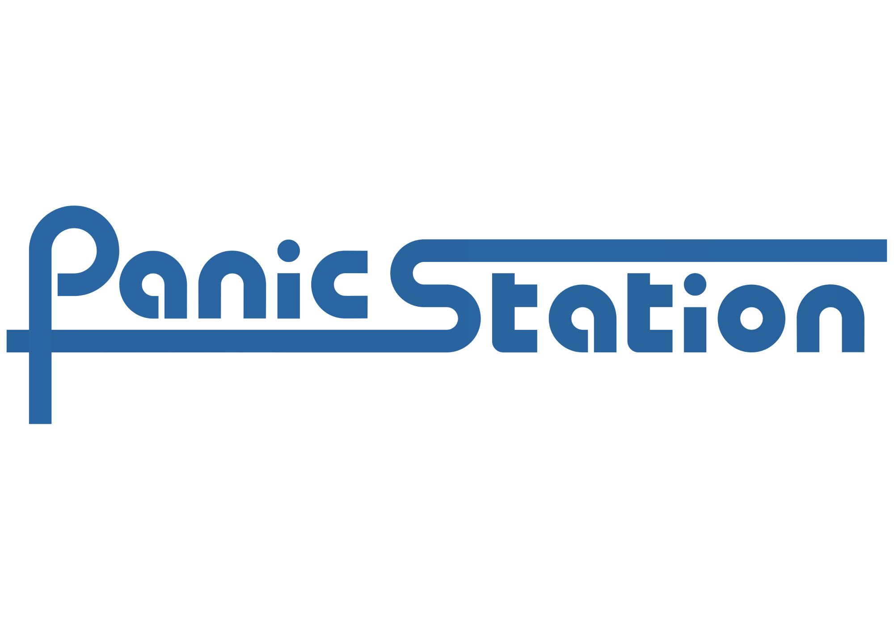

Three modern concepts, same content, photos, blue logo and IT/EN/DE toggle. Open each on desktop and mobile (rotate to see the portrait copertina).
Airy, sophisticated. Warm sand + teal accent, generous whitespace, thin gig rows. Lets the empty-wall copertina breathe.
High-energy pop-rock. Dark + yellow pop, scrolling marquee, ticket-style gig cards, punchy motion.
Contemporary, card-driven. Denim-blue accent, floating pill nav, rounded soft cards, split image/text.